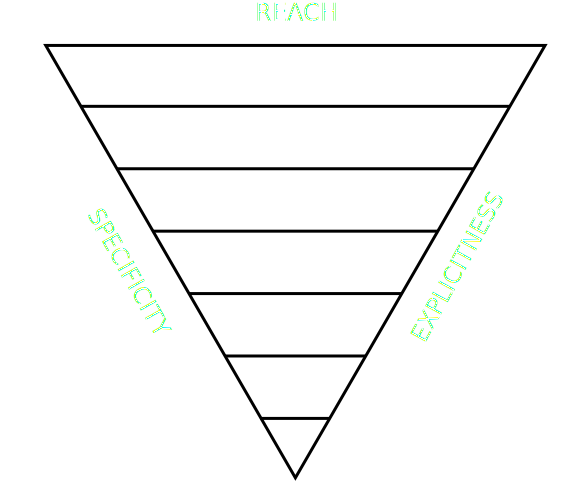

ITCSS
Inverted Triangle CSS
ITCSS in a nutshell
Separates CSS codebase into "layers"
ITCSS in a nutshell
Separates CSS codebase into "layers"

ITCSS in a nutshell
Separates CSS codebase into "layers"
- Settings: variables. Font, colors definitions, etc. No output.
- Tools: mixins and functions. No output.
- Generic: reset and/or normalize styles.
- Elements: bare HTML elements (like H1, A, etc.).
- Objects: class selectors which define undecorated design patterns, like the media
object from OOCSS.
- Components: specific UI components. Majority of code.
- Trumps: utilities and helper classes with ability to override anything.
ITCSS in a nutshell
Merits
- Helps to build a library of reusable components
- Less specificity war
- Compatible with BEM, SMACSS or OOCSS
- Helps to deal with cascade and selectors specificity
ITCSS in a nutshell
Faults
- Difficult to qualify styles, what category?
- Hard to maintain adherence to those definitions
- No documentation. Partially proprietary